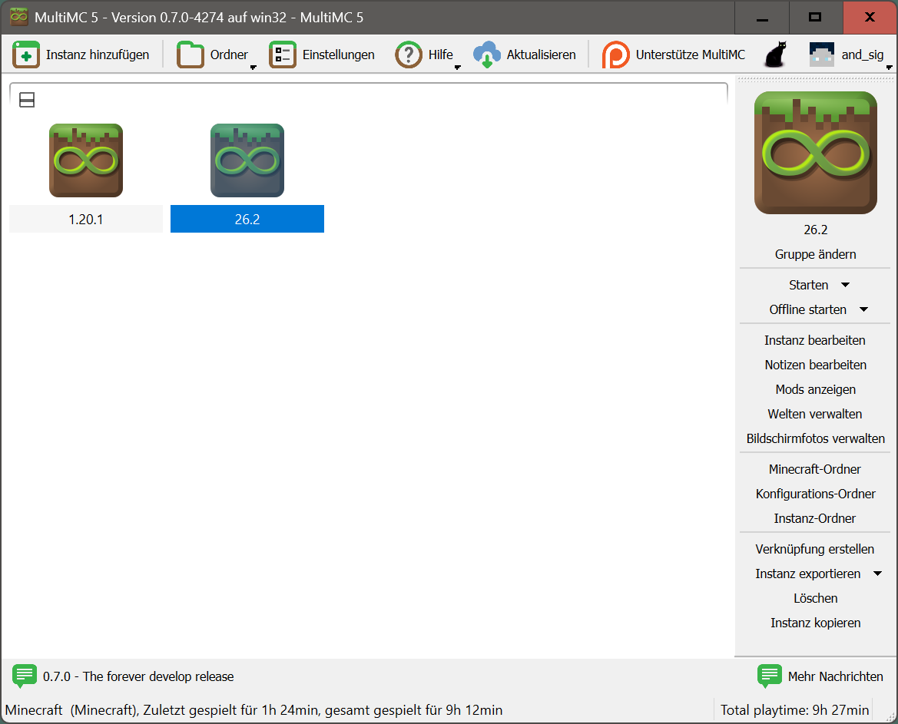
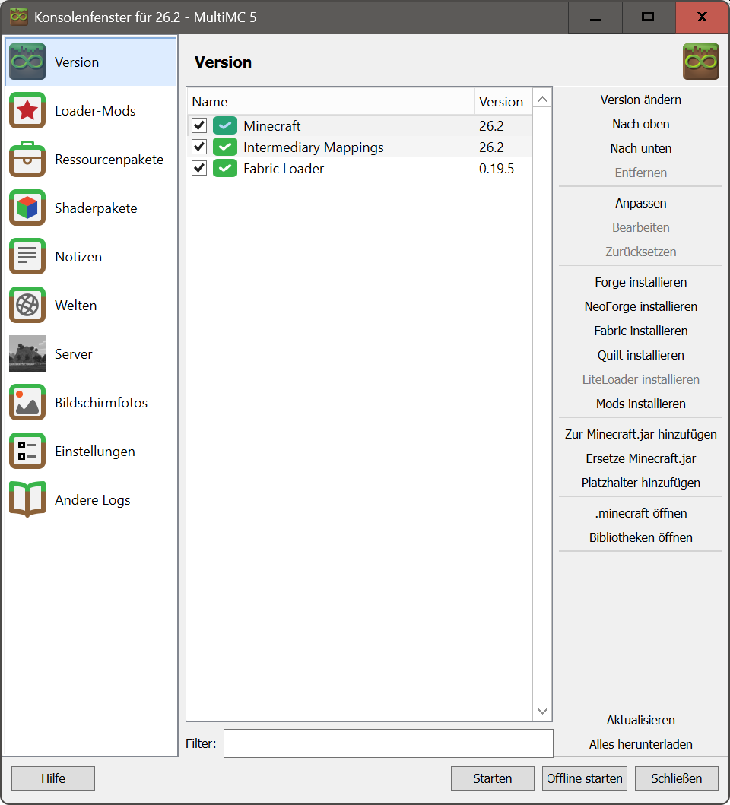
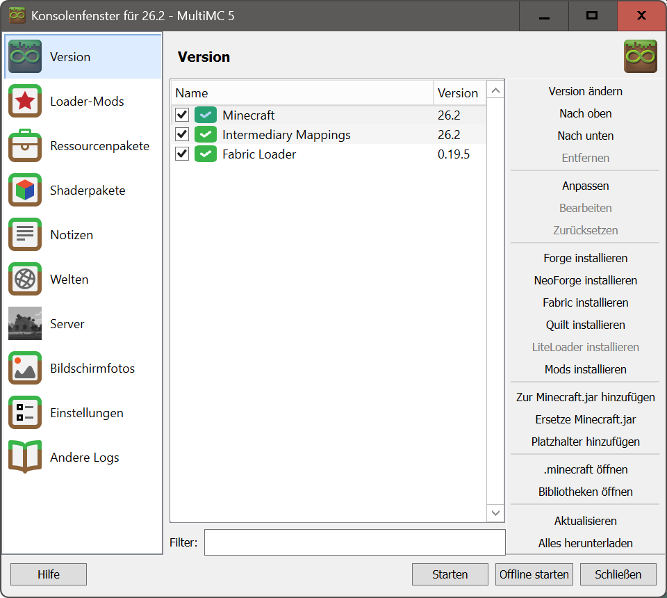
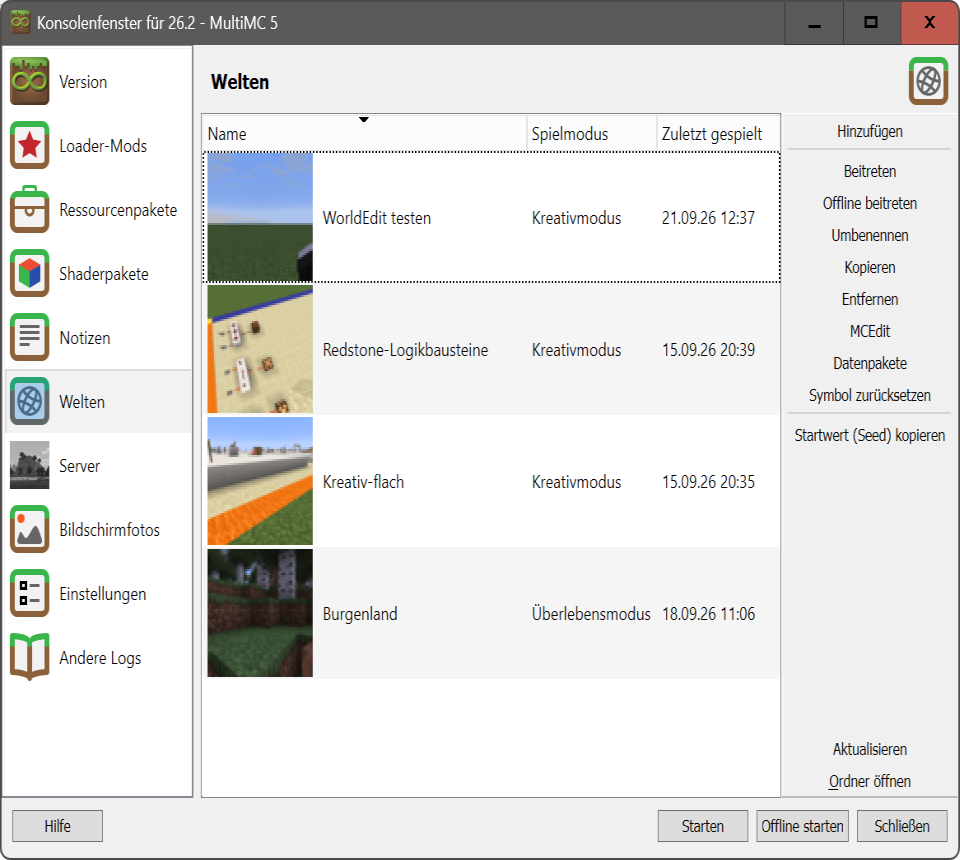

Minecraft Launcher
Die Bereitstellung und Verwaltung verschiedener Minecraft-Versionen, Instanzen und Mods auf den Schul-PCs
bereitet uns auf Grund fehlender Rechte und vorhandener Einschränkungen im Computernetzwerk große Schwierigkeiten.
Durch den Einsatz eines MultiMC-basierten Launchers in Verbidung
mit dem AG-Server und dem AG-Minecraft-Manager werden dieses Problem und weitgehend gelöst.
Der Launcher MultiMC kann auch auf ihren privaten Computern genutzt werden.
Dazu laden sie MultiMC von der offiziellen Website herunter.
Es stehen Versionen für Windows, macOS und Linux als gepackte Verzeichnisse zur Verfügung,
die lediglich entpackt werden müssen, um den Launcher zu nutzen.
Voraussetzung ist das Vorhandensein der Zugangsdaten für Minecraft: Java Edition bzw. Minecraft Bedrock Edition.
"Seit 7. Juni 2022 verkauft Mojang die PC-Version standardmäßig als „Minecraft: Java & Bedrock Edition for PC“.
Wer auf einem Windows-PC eine der beiden Editionen besaß, bekam die jeweils andere ebenfalls dazu."
Zugangsdaten für Konsolen oder PlayStation können auch genutzt werden, wenn es sich um ein Microsoft-Konto handelt.
Dann kannst du grundsätzlich dieselben Microsoft-Zugangsdaten auch auf Windows, macOS oder Linux im Minecraft-Launcher verwenden.
Bei Bedarf erhalten die AG-Mitglieder Informationen und Anleitungen zur Nutzung von MultiMC in der AG.
„MultiMC“-Launcher in Aktion



